Welcome to the Computer Clan Museum. In this section of the website there will be some stuff that was made by the CC in the past, lists of the members, and more.
The Computer Clan was created on March 30th, 2009. The YouTube channel was the first Computer Clan thing that was ever put into existence. When the Computer Clan started it had three members in it. Those members were Hildron101010, Totalmandude, and Saleen302e (CoolTechAB). The Computer Clan was not going to be a clan to accept memberships at the time, but later that idea came along.
 |
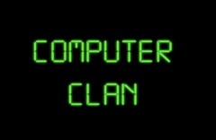 | These were the first two stylized logos for the Computer Clan. As you can see, they are pretty crappy. It was all whipped up in one day. Of course, the logos improved as time went on. |
The Computer Clan website was made a few weeks later. Unfortunately, version 1 of the website is completely gone. The only way you could see that old version of the site is if there was an old screenshot taken. Other than that, it is not saved anywhere. There is one screenshot of the Computer Clan website home page of version 2. It was a screenshot taken in the Safari Top Sites window.
| A little bit before the time of this screenshot, the Computer Clan started live broadcasts with USTREAM. You can find the first recorded stream on Hildron101010's YouTube page. You can also see other archived videos on the Computer Clan USTREAM page. Around this time, the Computer Clan met DGPRO. DGPRO was the first member to join the Computer Clan. Hildron101010, Totalmandude, and CoolTechAB didn't count because they made it together. | 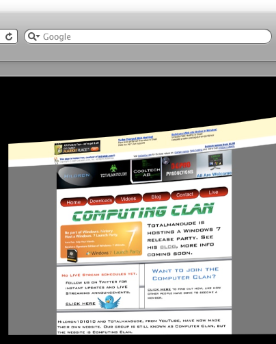 |
| 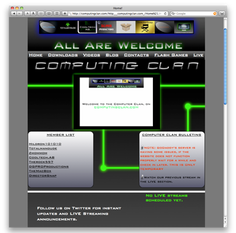 | This is another screenshot of an older version of the CC website. |
| 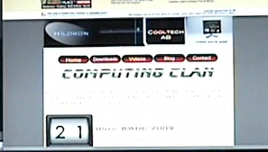 | A screenshot of version 1.0 of the CC website has been found. |
| The banner began changing as more members started joining. In this banner picture, the added members are TheMacBox, DirectorSnap, Cugocat12, and Zmommom. As you can see, there are two logos that are not on there anymore. However, CoolTechAB was re-added later. Also, around this time, a new logo was made for the CC. Also, around this time, the Computer Clan was abbreviated "CC" as the acronym for the name. | 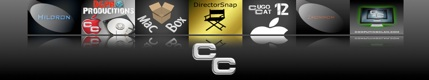 |
| The first two logos here were rough concepts of the new Computer Clan logo. The one to the far right was the one that was used. The "CC" in the middle of the computer screens is still being used today as the main logo for the CC. However, the logo with the computer monitor was ditched after about eight months. Then that is when the "CC Disk" was made. |
|
The Computer Clan, and some of its members, wanted to get into Podcasting. In the end, the Computer Clan Podcast was an audio version of Computer Clan Live. Here are the logos and logo concepts for the live show and Podcast.
| 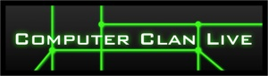 | 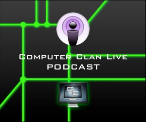 | 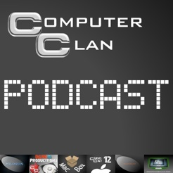 |
 |
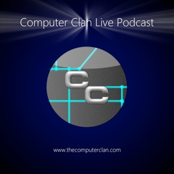 |
There are a few other things that were never released from the CC for numerous reasons. Here are some screenshots of the Computer Clan Central app for iPhone/iPad.
| 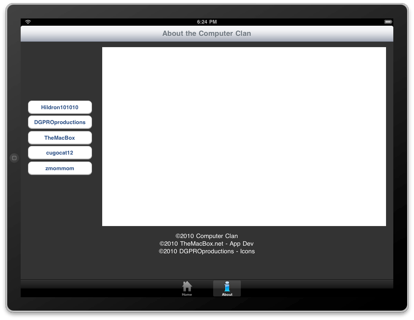 | 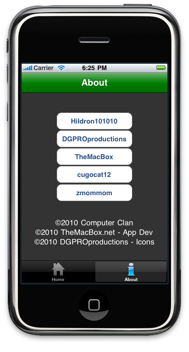 |
The Computer Clan also wanted to do some t-shirt design. The merchandise may be sold on Zazzle eventually. The top row of images is the most current design, but it will be changed. The lower one was the first concept.
| 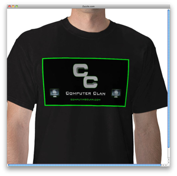 | 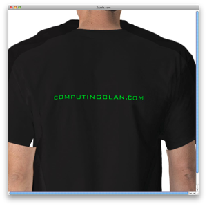 |
| 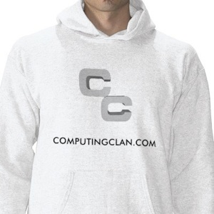 |
Tech Talk Live (TTL) was another live show from the Computer Clan. It was hosted by DGPROproductions and TheMacBox. 4iTV is another live show that sponsors the Computer Clan, and the Computer Clan sponsors them. Another live show was going to be "Gaming Central." This idea never went through, but then Zmommom started "Game Zone Central" which replaced the previous idea.
| 4iTV no longer exists or sponsors the CC. | 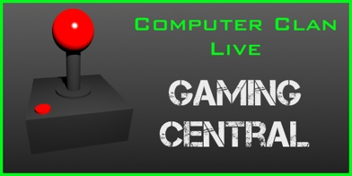 |
Windows Crap Edition was a video series introduced by Hildron101010 before the Computer Clan was even invented. When the CC started getting bigger they started making new versions of Crap Edition that were available for download. By doing this, people could download Windows Crap Edition and play around in it. This made the views on Crap Edition explode. In fact, if you just search Crap Edition in Google, the Computer Clan's videos and downloads for it are the first results.
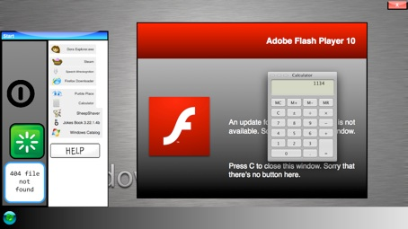MaestroBLC joined the CC shortly after he came to a Computer Clan Live stream. This stream aired on June 11th, 2010. A lot of people become members because of seeing the Computer Clan Live shows. It's a good way for people to get to know us.
Here is some more live history information. Computer Clan Live was originally called Computer Clan Broadcast. The name changed overtime just because it was a bit shorter, and easier to say. Here some screenshots of how the broadcasting studio has changed over the years.
| 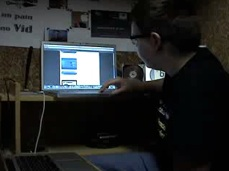 | 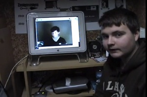 | 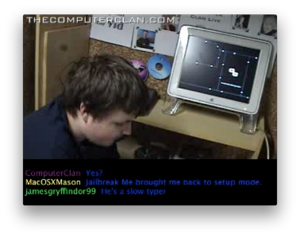 | |
| 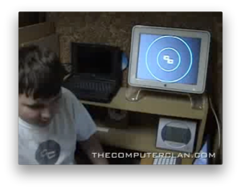 | 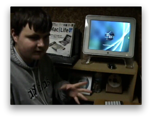 | 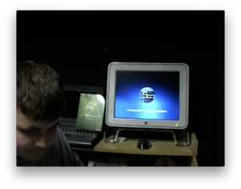 | 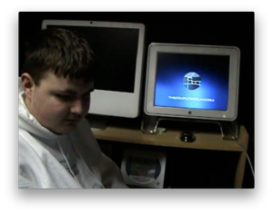 |
Here is the evolution of the Computer Clan logo.
|
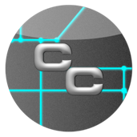 |
Everyone who ever joined, and started, the Computer Clan:
Hildron101010
Totalmandude
CoolTechAB0
DGPROproductions
Zmommom
TheMacBox
TheRock557
DirectorSnap
Cugocat12
CVBCBCMV
AppleObsessed1
Pelican1015
MasterOfWin7
MaestroBLC
iWindowsTech
Ace-XXX
LukeWFilms
Macuser8
NsdTech
MacOSXMason
Rain
DahNoodleMastah